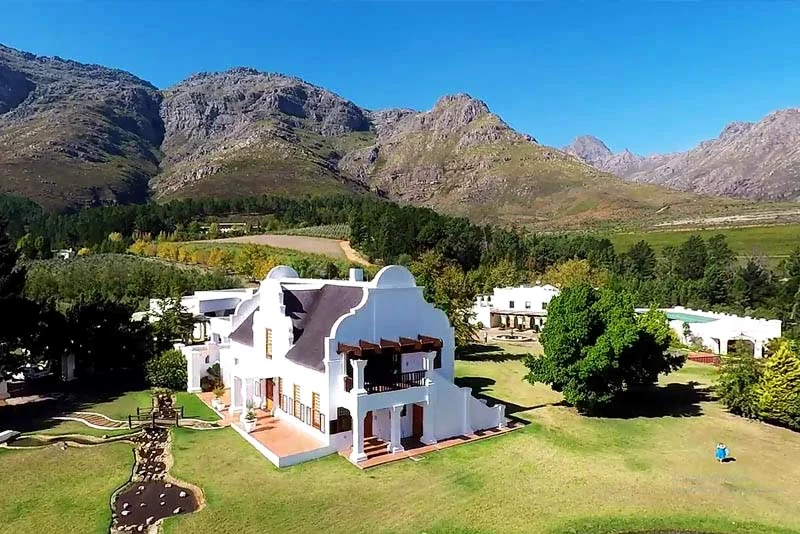
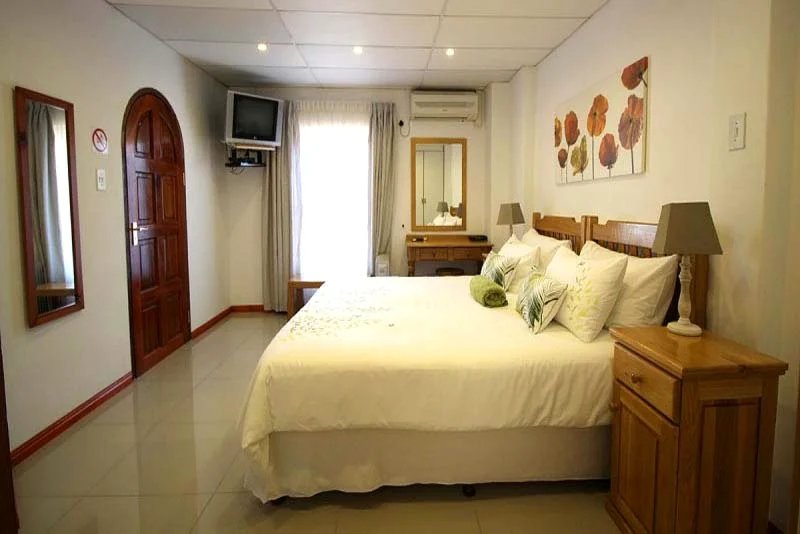
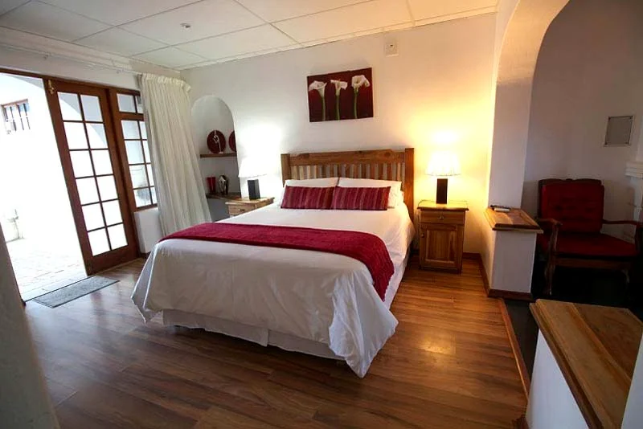
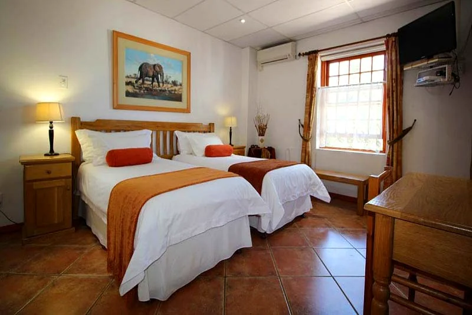
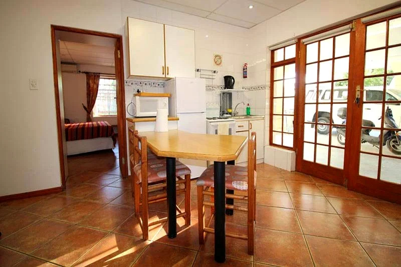

Five self-catering units on a working Winelands farm — a spring-fed dam, views clear across the Blaauwklippen Valley, and the vineyards of Stellenbosch a few minutes down the road.

Stellenboschfontein sits on the foothill of Stellenbosch Mountain, wrapped in vineyards and looking out over the Blaauwklippen Valley. There's a fresh-water spring, a dam that turns to glass at sunset, and space to breathe that a town guesthouse simply can't offer.
The five units are fully self-catering — your own kitchen, your own front door, your own pace. Come for the wine route, stay for the stillness.
All en-suite and fully self-catering, with equipped kitchenettes — from cosy two-person retreats to family-friendly units.

One-bedroom en-suite units with a living area and fully equipped kitchenette — perfect for couples touring the wine route.

A little more room — one bedroom, its own bathroom, a living area and full kitchenette for a longer Winelands stay.

Snug two-person units with kitchenette and en-suite — and the Helderberg can be arranged to welcome families with children.
Five units in all — book one, or take the whole farm for a gathering.
Sundowners by the water, the mountain turning gold, and not a sound but the frogs starting up.

Stellenbosch & the wine route
Somerset West & Helderberg
Cape Town Int. Airport
Cape Town city centre
On the foothill of Stellenbosch Mountain above the Blaauwklippen Valley — vineyards all around, and the whole Cape Winelands within easy reach.
[A favourite guest review goes here — pulled word-for-word from your wheretostay or Booking.com page, with permission.]
[A second real review here — the views, the peace and the dam are what guests mention most.]
These two spaces are waiting for your real guest reviews.
Booking directly means no booking-site commission, the best unit for your dates, and everything arranged personally with the family who farms here.
Also on 084 588 1671 · 021 880 1580